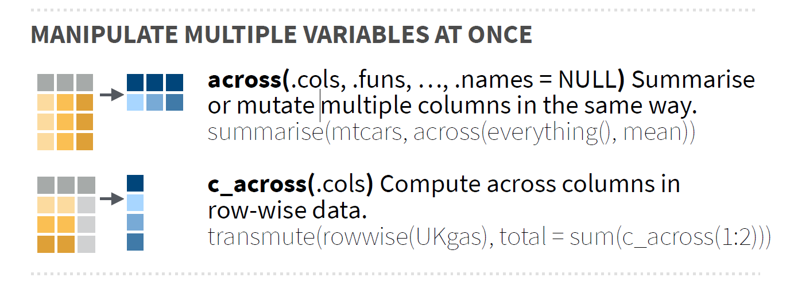

# meu computador (mudar de acordo)
setwd("E:/Desktop/UFSC/aulas/classes/RGV410046/data")6. Resumo
Diretório
Pacotes e dados
library(rio)
library(tidyverse)
library(metan)
# dados
maize <-
import("examples_data.xlsx",
sheet = "maize",
setclass = "tbl")Mutação
Geral

A função mutate() é utilizada quando se deseja adicionar novas variáveis no conjunto de dados. Estas variáveis são funções de variáveis existentes. Como exemplo, vamos criar uma nova variável chamada CD no conjunto de dados maize, qual será a razão entre CESP e DIES. Note que a função adiciona a nova variável após a última variável origina e mantém todas as demais. Você pode controlar a posição da nova variável criada utilizando os argumentos .before e .after (assim como na função relocate()) e quais variáveis são mantidas utilizando o argumento .keep.
# padrão: nova variável inserida na última posição
maize %>% mutate(CD = CESP/DIES)# A tibble: 780 × 11
AMB HIB REP APLA_PLANT AIES_PLANT CESP DIES MGRA MMG NGRA CD
<chr> <chr> <chr> <dbl> <dbl> <dbl> <dbl> <dbl> <dbl> <dbl> <dbl>
1 A1 H1 I 2.45 2.39 16.9 52.1 228. 375. NA 0.324
2 A1 H1 I 2.5 1.43 14.4 50.7 187. 437. 427 0.284
3 A1 H1 I 2.69 1.52 16.5 54.7 230. 464. 497 0.302
4 A1 H1 I 2.8 1.64 16.8 52.0 213. 408. 523 0.323
5 A1 H1 I 2.62 1.55 15.9 51.6 224. 406. 551 0.308
6 A1 H1 II 2.12 1.8 15 51.4 203. 383. 529 0.292
7 A1 H1 II 3.15 1.78 10.9 NA 75.2 256. 294 NA
8 A1 H1 II 2.97 1.84 15 53.4 204. 387. 528 0.281
9 A1 H1 II 3.1 1.78 13.6 50.8 187. 348. 538 0.267
10 A1 H1 II 3.02 1.6 16.3 53.9 250. 430. 582 0.302
# … with 770 more rows# posição da nova variável
maize %>% mutate(CD = CESP/DIES,
.after = DIES)# A tibble: 780 × 11
AMB HIB REP APLA_PLANT AIES_PLANT CESP DIES CD MGRA MMG NGRA
<chr> <chr> <chr> <dbl> <dbl> <dbl> <dbl> <dbl> <dbl> <dbl> <dbl>
1 A1 H1 I 2.45 2.39 16.9 52.1 0.324 228. 375. NA
2 A1 H1 I 2.5 1.43 14.4 50.7 0.284 187. 437. 427
3 A1 H1 I 2.69 1.52 16.5 54.7 0.302 230. 464. 497
4 A1 H1 I 2.8 1.64 16.8 52.0 0.323 213. 408. 523
5 A1 H1 I 2.62 1.55 15.9 51.6 0.308 224. 406. 551
6 A1 H1 II 2.12 1.8 15 51.4 0.292 203. 383. 529
7 A1 H1 II 3.15 1.78 10.9 NA NA 75.2 256. 294
8 A1 H1 II 2.97 1.84 15 53.4 0.281 204. 387. 528
9 A1 H1 II 3.1 1.78 13.6 50.8 0.267 187. 348. 538
10 A1 H1 II 3.02 1.6 16.3 53.9 0.302 250. 430. 582
# … with 770 more rows# mantém somente as utilizadas no cálculo
maize %>% mutate(CD = CESP/DIES,
.keep = "used")# A tibble: 780 × 3
CESP DIES CD
<dbl> <dbl> <dbl>
1 16.9 52.1 0.324
2 14.4 50.7 0.284
3 16.5 54.7 0.302
4 16.8 52.0 0.323
5 15.9 51.6 0.308
6 15 51.4 0.292
7 10.9 NA NA
8 15 53.4 0.281
9 13.6 50.8 0.267
10 16.3 53.9 0.302
# … with 770 more rows# mantém as não utilizadas
maize %>% mutate(CD = CESP/DIES,
.keep = "unused")# A tibble: 780 × 9
AMB HIB REP APLA_PLANT AIES_PLANT MGRA MMG NGRA CD
<chr> <chr> <chr> <dbl> <dbl> <dbl> <dbl> <dbl> <dbl>
1 A1 H1 I 2.45 2.39 228. 375. NA 0.324
2 A1 H1 I 2.5 1.43 187. 437. 427 0.284
3 A1 H1 I 2.69 1.52 230. 464. 497 0.302
4 A1 H1 I 2.8 1.64 213. 408. 523 0.323
5 A1 H1 I 2.62 1.55 224. 406. 551 0.308
6 A1 H1 II 2.12 1.8 203. 383. 529 0.292
7 A1 H1 II 3.15 1.78 75.2 256. 294 NA
8 A1 H1 II 2.97 1.84 204. 387. 528 0.281
9 A1 H1 II 3.1 1.78 187. 348. 538 0.267
10 A1 H1 II 3.02 1.6 250. 430. 582 0.302
# … with 770 more rows# mantém somente a variável criada
maize %>% mutate(CD = CESP/DIES,
.keep = "none")# A tibble: 780 × 1
CD
<dbl>
1 0.324
2 0.284
3 0.302
4 0.323
5 0.308
6 0.292
7 NA
8 0.281
9 0.267
10 0.302
# … with 770 more rowsMutação por grupos

A função group_by() pode ser utilizada para realizar mutação dentro de cada nível de uma ou mais variáveis categóricas. Para este exemplo, vamos criar uma variável (rank) que será o rankeamento das observações dentro de cada híbrido com base na MGRA (em ordem decrescente).
maize |>
group_by(HIB) |>
mutate(rank = rank(desc(MGRA)))# A tibble: 780 × 11
# Groups: HIB [13]
AMB HIB REP APLA_PLANT AIES_PLANT CESP DIES MGRA MMG NGRA rank
<chr> <chr> <chr> <dbl> <dbl> <dbl> <dbl> <dbl> <dbl> <dbl> <dbl>
1 A1 H1 I 2.45 2.39 16.9 52.1 228. 375. NA 8
2 A1 H1 I 2.5 1.43 14.4 50.7 187. 437. 427 33
3 A1 H1 I 2.69 1.52 16.5 54.7 230. 464. 497 7
4 A1 H1 I 2.8 1.64 16.8 52.0 213. 408. 523 15
5 A1 H1 I 2.62 1.55 15.9 51.6 224. 406. 551 9
6 A1 H1 II 2.12 1.8 15 51.4 203. 383. 529 22
7 A1 H1 II 3.15 1.78 10.9 NA 75.2 256. 294 60
8 A1 H1 II 2.97 1.84 15 53.4 204. 387. 528 21
9 A1 H1 II 3.1 1.78 13.6 50.8 187. 348. 538 31
10 A1 H1 II 3.02 1.6 16.3 53.9 250. 430. 582 5
# … with 770 more rows
Tip
O ranqueamento acima foi obtido com base no ranqueamento, utilizando a função slice_min(). Execute o código abaixo e veja o que acontece.
maize |>
group_by(HIB) |>
slice_max(MGRA, n = 2)Em alguns casos, um agrupamento específico onde cada linha é considerada um grupo pode ser útil. Isto pode ser realizado com a função rowwise(). Como group_by(), rowwise() não faz nada sozinha; apenas muda a forma como os outros verbos (ex., mutate, summarise funcionam). Por exemplo, compare os resultados de mutate() no código a seguir:
df <- tibble(x = 1:2, y = 3:4, z = 5:6)
# sem rowise()
df |> mutate(m = sum(c(x, y, z)))# A tibble: 2 × 4
x y z m
<int> <int> <int> <int>
1 1 3 5 21
2 2 4 6 21# com rowise()
df |>
rowwise() |>
mutate(soma = sum(c(x, y, z)))# A tibble: 2 × 4
# Rowwise:
x y z soma
<int> <int> <int> <int>
1 1 3 5 9
2 2 4 6 12# mesmo resultado
# utilizando semântica tidyselect
df |>
rowwise() |>
mutate(soma = sum(c_across(x:z)))# A tibble: 2 × 4
# Rowwise:
x y z soma
<int> <int> <int> <int>
1 1 3 5 9
2 2 4 6 12Mutação de várias variáveis

Em alguns casos, deseja-se aplicar a mesma função de mutação (ou resumo) à várias variáveis. A função across() facilita a aplicação da mesma transformação a várias colunas, permitindo que você use a semântica select() dentro de funções como summarise() e mutate(). Como exemplo de aplicação, vamos criar uma função para rescalar uma variável para uma amplitude 0-1 e aplicar essa função à todas as colunas numéricas do conjunto maize.
# função para rescalar
rescale <- function(x) {
rng <- range(x, na.rm = TRUE)
(x - rng[1]) / (rng[2] - rng[1])
}
# aplica a função rescale() a todas as colunas numéricas
maize %>% mutate(across(where(is.numeric), rescale))# A tibble: 780 × 10
AMB HIB REP APLA_PLANT AIES_PLANT CESP DIES MGRA MMG NGRA
<chr> <chr> <chr> <dbl> <dbl> <dbl> <dbl> <dbl> <dbl> <dbl>
1 A1 H1 I 0.630 1 0.821 0.674 0.730 0.596 NA
2 A1 H1 I 0.652 0.492 0.694 0.611 0.551 0.742 0.370
3 A1 H1 I 0.735 0.540 0.801 0.786 0.739 0.805 0.463
4 A1 H1 I 0.783 0.603 0.816 0.670 0.666 0.674 0.497
5 A1 H1 I 0.704 0.556 0.770 0.652 0.710 0.669 0.534
6 A1 H1 II 0.487 0.688 0.724 0.645 0.620 0.615 0.505
7 A1 H1 II 0.935 0.677 0.515 NA 0.0717 0.314 0.194
8 A1 H1 II 0.857 0.709 0.724 0.728 0.627 0.624 0.504
9 A1 H1 II 0.913 0.677 0.653 0.620 0.553 0.532 0.517
10 A1 H1 II 0.878 0.582 0.791 0.752 0.825 0.726 0.575
# … with 770 more rows# aplica a função rescale() para algumas colunas
maize %>% mutate(across(MGRA:NGRA, rescale))# A tibble: 780 × 10
AMB HIB REP APLA_PLANT AIES_PLANT CESP DIES MGRA MMG NGRA
<chr> <chr> <chr> <dbl> <dbl> <dbl> <dbl> <dbl> <dbl> <dbl>
1 A1 H1 I 2.45 2.39 16.9 52.1 0.730 0.596 NA
2 A1 H1 I 2.5 1.43 14.4 50.7 0.551 0.742 0.370
3 A1 H1 I 2.69 1.52 16.5 54.7 0.739 0.805 0.463
4 A1 H1 I 2.8 1.64 16.8 52.0 0.666 0.674 0.497
5 A1 H1 I 2.62 1.55 15.9 51.6 0.710 0.669 0.534
6 A1 H1 II 2.12 1.8 15 51.4 0.620 0.615 0.505
7 A1 H1 II 3.15 1.78 10.9 NA 0.0717 0.314 0.194
8 A1 H1 II 2.97 1.84 15 53.4 0.627 0.624 0.504
9 A1 H1 II 3.1 1.78 13.6 50.8 0.553 0.532 0.517
10 A1 H1 II 3.02 1.6 16.3 53.9 0.825 0.726 0.575
# … with 770 more rowsTambém é possível utilizar a semântica select() dentro de across(). Isso significa que select helpers podem ser utilizados. No exemplo abaixo apenas as variáveis que contém "_PLANT" são mutadas, sendo que os valores destas variáveis são divididos por 2.
# usando select helpers
# divide o valor da variável pela metade
# atribui um sufixo para as novas variáveis
# seleciona apenas as utilizadas
maize %>%
mutate(across(contains("_PLANT"), ~.x / 2,
.names = "{.col}_metade"),
.after = AIES_PLANT,
.keep = "used")# A tibble: 780 × 4
APLA_PLANT AIES_PLANT APLA_PLANT_metade AIES_PLANT_metade
<dbl> <dbl> <dbl> <dbl>
1 2.45 2.39 1.23 1.20
2 2.5 1.43 1.25 0.715
3 2.69 1.52 1.34 0.76
4 2.8 1.64 1.4 0.82
5 2.62 1.55 1.31 0.775
6 2.12 1.8 1.06 0.9
7 3.15 1.78 1.58 0.89
8 2.97 1.84 1.48 0.92
9 3.1 1.78 1.55 0.89
10 3.02 1.6 1.51 0.8
# … with 770 more rowsMutação condicional
É muito comum comum que condicionantes sejam necessárias quando alguma nova variável for criada. Neste exemplo, será mostrado como uma variável qualitativa nominal pode ser criada utilizando a função case_when(). case_when() é particularmente útil dentro da função mutate() quando você quer criar uma nova variável que depende de uma combinação complexa de variáveis existentes. No exemplo abaixo, uma nova variável será criada dependendo dos valores de APLA, AIES ou CESP. Ao agrupar pela nova variável categórica criada e utilizar a função slice_sample(), um exemplo de cada nível é amostrado aleatoriamente.
maize %>%
mutate(
CASO = case_when(
MGRA > 280 | APLA_PLANT < 1.3 | NGRA > 820 ~ "Selecionar",
APLA_PLANT > 2.3 ~ "Alto",
MGRA < 130 ~ "Pouco produtivo",
TRUE ~ "Outro"
)
) |>
group_by(CASO) |>
slice_sample(n = 1)# A tibble: 4 × 11
# Groups: CASO [4]
AMB HIB REP APLA_PLANT AIES_PLANT CESP DIES MGRA MMG NGRA CASO
<chr> <chr> <chr> <dbl> <dbl> <dbl> <dbl> <dbl> <dbl> <dbl> <chr>
1 A3 H12 I 2.6 1.58 14.8 51.8 172. 289. 596 Alto
2 A3 H11 I 1.92 1.1 15.8 47.3 160. 271. 590 Outro
3 A3 H8 II 2.28 1.15 14.2 44.4 114. 298. 384 Pouco p…
4 A4 H8 I 2.65 1.67 18 50 277. 251. 903 Selecio…Sintetização
Após a organização e mutação dos dados, o cientista precisa resumi-los utilizando alguma métrica de interesse. A média, a mediana, a variância, a frequência, a proporção, por exemplo, são tipos de sumarização que trazem diferentes informações sobre uma variável. No R, a função summarise() cria um novo data frame. Ele terá uma (ou mais) linhas para cada combinação de variáveis de agrupamento; se não houver variáveis de agrupamento, a saída terá uma única linha resumindo todas as observações na entrada. Ele conterá uma coluna para cada variável de agrupamento e uma coluna para cada uma das estatísticas de resumo que você especificou.
Uma variável, uma estatística
Diversos verbos do pacote dplyr podem ser utilizados para resumir conjuntos de dados. Iniciaremos com a função count() para contar valores que se repetem em uma determinada variável. Por exemplo, é possível identificar qual é o valor de NGRA que mais se repete utilizando
maize |> count(NGRA, sort = TRUE)# A tibble: 367 × 2
NGRA n
<dbl> <int>
1 419 8
2 513 8
3 503 7
4 528 7
5 529 7
6 538 7
7 451 6
8 481 6
9 493 6
10 530 6
# … with 357 more rowsPara identificar quais os valores distintos de NGRA foram observados a função distinct() é usada.
maize |> distinct(NGRA)# A tibble: 367 × 1
NGRA
<dbl>
1 NA
2 427
3 497
4 523
5 551
6 529
7 294
8 528
9 538
10 582
# … with 357 more rowsUma variável, diversas estatísticas
Utilizando a função summarise() é possível criar uma ou mais variáveis escalares resumindo as variáveis de um data frame existente. Como resultado, uma linha e várias colunas é retornada. O seguinte código calcula a média global e o desvio padrão amostral da variável MGRA eretorna o n utilizado na estimativa.
maize %>%
summarise(MGRA_mean = mean(MGRA),
MGRA_sd = sd(MGRA),
n = n())# A tibble: 1 × 3
MGRA_mean MGRA_sd n
<dbl> <dbl> <int>
1 173. 47.6 780Muitas vezes é necessário computar uma determinada função (como a média) para cada nível de uma variável categórica. Continuamos no mesmo exemplo anterior, mas agora neste caso, o objetivo é calcular a média da MGRA para cada híbrido. Utilizando a função group_by() antes da função summarise() uma linha de resultado para cada nível do fator híbrido é retornado.
maize %>%
group_by(HIB) %>%
summarise(MGRA_mean = mean(MGRA),
MGRA_sd = sd(MGRA),
n = n())# A tibble: 13 × 4
HIB MGRA_mean MGRA_sd n
<chr> <dbl> <dbl> <int>
1 H1 184. 43.9 60
2 H10 164. 50.1 60
3 H11 167. 40.6 60
4 H12 157. 45.1 60
5 H13 180. 44.3 60
6 H2 187. 46.0 60
7 H3 169. 48.2 60
8 H4 184. 35.7 60
9 H5 184. 41.1 60
10 H6 188. 52.7 60
11 H7 171. 44.0 60
12 H8 160. 53.8 60
13 H9 153. 55.2 60Diversas variáveis, uma estatística
Até aqui vimos como a média (global ou para cada híbrido) da MGRA pode ser calculada. Quase sempre, no entanto, quando calculamos a média (ou qualquer outra medida) em um conjunto de dados, queremos fazê-la para todas (ou algumas) variáveis numéricas dos dados. Implementar isto com dplyr é relativamente fácil. Para isto, é utilizada a função across() que aplica uma função (ou um conjunto de funções) a um conjunto de colunas. Veremos como across() pode ser utilizada para calcular a média para as variáveis numéricas do conjunto maize. No exemplo abaixo, where() aplica uma função (neste caso is.numeric()) a todas as variáveis e seleciona aquelas para as quais a função retorna TRUE. Assim, a média somente é calculada para as variáveis numéricas.
maize %>%
summarise(across(where(is.numeric), mean, na.rm = TRUE))# A tibble: 1 × 7
APLA_PLANT AIES_PLANT CESP DIES MGRA MMG NGRA
<dbl> <dbl> <dbl> <dbl> <dbl> <dbl> <dbl>
1 2.48 1.34 15.2 49.5 173. 339. 512.Funções próprias podem ser aplicadas dentro da função summarise() para computar uma estatística personalizada. Como exemplo, vamos criar uma função chamada se que retornará o erro padrão da média e aplicá-la a todas as variáveis que iniciam "M", para cada nível do fator AMB.
se <- function(x){
return(sd(x, na.rm = TRUE) / sqrt(length(x)))
}
maize %>%
group_by(AMB) %>%
summarise(across(starts_with("M"), se, .names = "{.col}_se"))# A tibble: 4 × 3
AMB MGRA_se MMG_se
<chr> <dbl> <dbl>
1 A1 3.23 4.16
2 A2 3.38 4.86
3 A3 2.79 4.42
4 A4 3.12 4.20Diversas variáveis, diversas estatísticas
Se desejamos computar mais de uma estatística para variáveis específicas, então o próximo código nos ajudará. Note que para aplicar mais de uma função é necessário criar uma lista com o nome das funções. Neste caso, os sufixos _m e _sd representam a média e o desvio padrão, respectivamente. Faremos isso para cada nível da variável HIB.
maize %>%
group_by(HIB) |>
summarise(across(starts_with("M"), list(m = mean, sd = sd)))# A tibble: 13 × 5
HIB MGRA_m MGRA_sd MMG_m MMG_sd
<chr> <dbl> <dbl> <dbl> <dbl>
1 H1 184. 43.9 365. 53.7
2 H10 164. 50.1 320. 67.6
3 H11 167. 40.6 333. 53.8
4 H12 157. 45.1 316. 55.5
5 H13 180. 44.3 340. 60.6
6 H2 187. 46.0 356. 59.0
7 H3 169. 48.2 346. 61.8
8 H4 184. 35.7 346. 55.0
9 H5 184. 41.1 341. 60.3
10 H6 188. 52.7 363. 57.2
11 H7 171. 44.0 345. 56.3
12 H8 160. 53.8 322. 71.2
13 H9 153. 55.2 311. 82.8Quick tips
my_quantile <- function(x, probs) {
tibble::tibble(x = quantile(x, probs), probs = probs)
}
mtcars %>%
group_by(cyl) %>%
summarise(my_quantile(disp, c(0.25, 0.75)))`summarise()` has grouped output by 'cyl'. You can override using the `.groups`
argument.# A tibble: 6 × 3
# Groups: cyl [3]
cyl x probs
<dbl> <dbl> <dbl>
1 4 78.8 0.25
2 4 121. 0.75
3 6 160 0.25
4 6 196. 0.75
5 8 302. 0.25
6 8 390 0.75maize %>%
group_by(HIB) %>%
summarise(my_quantile(MGRA, c(0.25, 0.75)))`summarise()` has grouped output by 'HIB'. You can override using the `.groups`
argument.# A tibble: 26 × 3
# Groups: HIB [13]
HIB x probs
<chr> <dbl> <dbl>
1 H1 162. 0.25
2 H1 211. 0.75
3 H10 131. 0.25
4 H10 199. 0.75
5 H11 144. 0.25
6 H11 193. 0.75
7 H12 121. 0.25
8 H12 186. 0.75
9 H13 146. 0.25
10 H13 211. 0.75
# … with 16 more rows